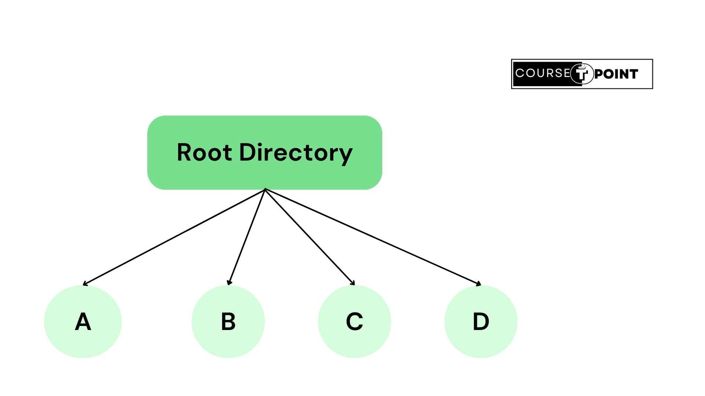
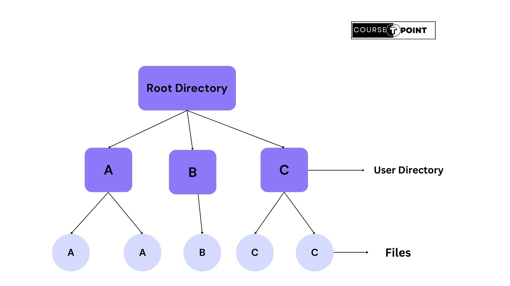

File Management System
A file management system in an operating system is a software component responsible for managing files and directories on a computer's storage devices. It provides a way for users and programs to create, access, modify, and organize files and folders efficiently. The file management system handles tasks such as file creation, deletion, copying, moving, renaming, and searching.
Different operating systems may implement file management systems differently, with variations in features, performance, and supported file system types (e.g., FAT, NTFS, ext4, APFS). However, the primary goal remains consistent: to provide an efficient and reliable way to organize and manage data stored on a computer's storage devices.
Features of File Management System:
- File Organization: It determines how files are stored on disk, which may include methods like contiguous allocation, linked allocation, or indexed allocation.
- File Access Control: It manages permissions and access rights to files and directories, ensuring that only authorized users or processes can read from or write to them.
- File System Utilities: It provides utilities for performing various file-related operations, such as file compression, encryption, backup, and restoration.
- File System Integrity: It ensures the integrity and consistency of file data through mechanisms like file system journaling, transactional file systems, and file system checkers.
- Directory Management: It allows users to organize files into directories or folders, and provides operations for creating, renaming, moving, and deleting directories.
- File System Recovery: : It includes mechanisms for recovering from system crashes or disk failures, such as automatic file system repair tools or backup and restore utilities.
File Access Methods
In operating systems, file access methods define how data within files is accessed and manipulated by programs or users. These methods determine how files are read from or written to storage devices such as hard drives, solid-state drives (SSDs), or network shares.
Several common file access methods include:
Sequential Access: In sequential access, data is read or written sequentially from the beginning to the end of the file. Each subsequent read or write operation starts where the previous one left off. This method is analogous to reading a book from cover to cover. Sequential access is efficient for processing large volumes of data sequentially but inefficient for random access.
Sequential access is well-suited for tasks such as reading or writing log files, processing data streams, or scanning through large datasets sequentially. However, it is not efficient for random access to specific locations within the file, as it requires reading through all preceding data to reach the desired position.
In terms of performance, sequential access can be efficient for processing large volumes of data, especially when data is read or written in contiguous blocks. It is often used in scenarios where data processing follows a predetermined order or when the overhead of maintaining random access pointers is unnecessary.
Here's how Sequential Access works-
- Reading Data: When reading from a file sequentially, the operating system starts reading data from the beginning of the file and continues until it reaches the end of the file or until the requested amount of data has been read. Each read operation advances the file pointer to the next position in the file, allowing subsequent reads to continue from where the previous one ended.
- Writing Data: When writing to a file sequentially, new data is appended to the end of the file. Each write operation appends data to the current end of the file, and the file pointer is automatically advanced to the newly written data. This ensures that data is written in the order it is received, preserving the sequential nature of the file.
Overall, sequential access is a fundamental file access method in operating systems that provides a simple and efficient way to process data in a linear fashion.
Random Access: Random access method in operating systems allows direct access to any part of a file, rather than sequentially reading or writing data from start to end. With random access, you can read or write data at any position within the file, without needing to traverse the entire file sequentially.
Random access is particularly useful in scenarios where you need to access specific data within a file quickly, without having to read through or write unnecessary data. Random access is contrasted with sequential access, where data is processed in the order it appears in the file. While sequential access is efficient for processing data linearly, random access provides flexibility and speed for accessing data non-sequentially.
In operating systems, random access is supported through system calls or APIs that allow programs to seek to specific file positions and perform read or write operations at those locations. These mechanisms enable efficient and flexible data access within files, contributing to the overall performance and functionality of the system.
Here's how random access works-
- File Pointer: n random access, a file pointer (also known as a seek pointer) keeps track of the current position within the file. This pointer indicates the byte offset from the beginning of the file where the next read or write operation will occur.
- Seeking: o access a specific position within the file, you can use a seek operation to move the file pointer to the desired location. This operation allows you to jump directly to the desired byte offset, regardless of its position within the file.
- Reading/Writing: Once the file pointer is positioned at the desired location, you can perform read or write operations as needed. These operations directly access the data at the specified byte offset, without needing to read or write preceding data.
Indexed Sequential Access Method (ISAM): ISAM combines aspects of both sequential and random access methods. It uses an index to allow direct access to specific portions of the file while maintaining the sequential order of the data. The index typically contains pointers to the locations of records within the file. This method is efficient for applications requiring both sequential and random access.
ISAM is widely used in database management systems (DBMS) for organizing and accessing data efficiently. It improves performance by minimizing the need for full-file scans while still allowing for direct access to specific records.
Despite its benefits, ISAM may suffer from limitations related to index maintenance overhead and scalability in very large datasets. As a result, modern databases often employ more advanced indexing techniques such as B-trees or hash-based indexing. However, ISAM remains a fundamental concept in understanding file organization and access methods in operating systems and databases.
Here's how Indexed Sequential Access Method works:
- Sequential Organization: The data within the file is organized sequentially, meaning records are stored one after the other in the order they were inserted or sorted. This sequential arrangement makes it efficient for operations that involve processing data in the order it was stored.
- Index Structure: Alongside the sequential data, ISAM maintains an index structure. This index consists of key fields from the records along with pointers to their physical locations within the file. The index facilitates direct access to records based on their key values.
- Direct Access: Applications can access records directly by performing lookups on the index using the desired key value. The index enables the system to quickly locate the position of the record within the file without needing to sequentially scan through the entire file.
- Balanced Tradeoff: ISAM strikes a balance between the efficiency of sequential access and the flexibility of random access. It's particularly beneficial for applications that require both sequential and direct access to data, such as database systems.
- Index Maintenance: The index needs to be periodically updated to reflect changes in the underlying data. When records are added, deleted, or modified, the index must be adjusted accordingly to ensure accurate and efficient access.
File Allocation Methods
File allocation methods in operating systems refer to the strategies used for assigning disk blocks to files. These methods determine how files are stored and managed on storage devices such as hard disk drives.
Here are some common File Allocation Methods are-
Contiguous Allocation: Contiguous allocation is a file allocation method used in operating systems for storing files on disk. In this method, each file occupies a contiguous block of disk space. When a file is created or extended, the operating system allocates a continuous set of blocks (also known as clusters or extents) large enough to accommodate the entire file.
Contiguous allocation remains a straightforward and efficient file allocation method, especially for small and static file systems. However, modern file systems often use more advanced allocation techniques, such as linked allocation, indexed allocation, or a combination of methods, to address the challenges posed by fragmentation and dynamic file growth.
Advatages of Contiguous Allocation:
- Accessing data sequentially is highly efficient.
- Contiguous allocation is relatively simple to implement compared to other allocation methods such as linked allocation or indexed allocation
- Contiguous allocation is well-suited for small files that can fit within a single contiguous block.
- Deleting a file in a contiguous allocation system is generally faster compared to systems with more complex allocation methods.
Disadvantages of Contiguous Allocation:
- Contiguous allocation can lead to fragmentation over time, especially in systems with frequent file creation, deletion, and resizing.
- Contiguous allocation may lead to inefficient space utilization, particularly for small files.
- Contiguous allocation imposes limitations on the maximum size of files that can be stored on the disk.
- As fragmentation accumulates, the performance of the file system can degrade significantly
Indexed Allocation: Indexed allocation is a file allocation method used in operating systems for storing files on disk. It employs an index table or index block to keep track of the disk blocks allocated to each file. Instead of directly mapping file data blocks to disk addresses, indexed allocation maintains a separate index structure that maps logical file blocks to physical disk blocks.
Advantages of Indexed Allocation Method:
- Indexed allocation provides efficient random access to files.
- Indexed allocation provides flexibility in file size and layout.
- Indexed allocation helps reduce external fragmentation by allowing files to be allocated non-contiguously on the disk.
- Indexed allocation is well-suited for handling large files efficiently.
Disadvantages of Indexed Allocation Method:
- Indexed allocation requires maintaining an index block for each file, which adds overhead in terms of storage space and management.
- If an index block becomes corrupted or damaged due to disk errors or system failures, it can lead to data loss or file system corruption.
- Implementing and managing indexed allocation can be more complex compared to other allocation methods such as contiguous or linked allocation.
- Indexed allocation may not be efficient for small files that can fit within a single disk block.
Linked List Allocation: Linked list allocation is a method used in operating systems for managing file storage on disk. In this allocation method, files are represented as linked lists of disk blocks. Each disk block contains both data and a pointer to the next block in the file.
Linked list allocation provides flexibility and simplicity, especially for variable-length files and dynamic file growth. However, it may suffer from inefficiencies in random access and space overhead due to the need for pointer storage. Modern file systems often use a combination of allocation methods to balance efficiency and flexibility.
Advantages of Linked List Allocation Method:
- Linked list allocation allows for dynamic file size changes without the need for contiguous blocks of disk space.
- Unlike contiguous allocation methods, linked list allocation does not suffer from external fragmentation.
- Linked list allocation can lead to efficient use of disk space, especially for files with irregular sizes or when space is fragmented.
- Managing file storage with linked list allocation is relatively straightforward.
Disadvantages of Linked List Allocation Method:
- Linked list allocation can lead to poor random access performance, especially for large files.
- Linked list allocation incurs storage overhead due to the need to store pointers in each disk block.
- Although linked list allocation avoids external fragmentation of file data, it can suffer from fragmentation of pointers.
- If a pointer becomes corrupted or points to an incorrect location, it can lead to data loss or corruption within the file.
Directory System
In operating systems, a directory is a container or a structure used to organize files into a hierarchical structure for easier navigation and management. Also known as folders in graphical user interfaces (GUIs), directories serve as a way to categorize and group related files together.
Directories can contain files and subdirectories, allowing for a nested structure where directories can be nested within other directories. This hierarchical arrangement helps users organize their data in a logical and manageable way.
Directories are an essential part of file systems, as they provide a structured approach to storing and accessing data. Users can navigate through directories to find and manipulate files using file management utilities provided by the operating system.
Directories are typically represented by names and can be referenced using a path, which specifies the location of the directory within the file system hierarchy. For example, in Unix-based systems, a directory path might look like "/home/user/Documents", where "Documents" is a directory nested within the "user" directory, which is in turn nested within the "home" directory.
Directory can be categorize into three parts-
Single-Level Directory: A single-level directory system is a simple file management structure in an operating system where all files are placed in a single directory or folder. In such a system, there are no subdirectories or nested folders; all files reside directly within the main directory.
Single-level directory systems are rarely used in modern operating systems for practical purposes due to their limitations. Most contemporary operating systems employ hierarchical directory structures, allowing for better organization, scalability, and management of files.
Here's an example of Single-Level Directory-
Two-Level Directory System: To avoid conflicts caused by different users choosing the same file name for their own files, the next step is given each user a private directory. In that way, names choosen by one user do not interfere with names choosen by a different user and there is no problem caused by the same name occuring in two or more directories.
In simple words, A two-level directory system in an operating system is an improvement over the single-level directory system, providing a bit more organization and structure for managing files. In a two-level directory system, files are organized into a simple two-tiered hierarchy, consisting of a root directory and multiple user directories
Here's an example of Two-Level Directory system-
Hierarchical Directory Systems: The two-Level directory eliminates name conflicts among users but is not satisfactory for users with a large number of files. Even on a single-user personal computer, it is inconvenient. It is quite common for users to want to group their files together in logical ways.
A professor, for example, might have a collection of files that together form a book that he is writing for one course, a second collection of files containing student programs submitted for another course, a third group of files containing the code of an advanced compiler-writing system he is building, a fourth group of files containing grant proposals, as well as other files for electronic mail, minutes of meetings, papers he is writing, games, and so on. Some way is needed to group these files together in flexible ways chosen by the user.
Here's an example of Hierarchical Directory System-

File Protection:
File protection in an operating system (OS) refers to the mechanisms and policies put in place to ensure the security and integrity of files and data stored on a computer system. These protections are essential for maintaining the confidentiality, integrity, and availability of data.
Not all file access is created equal. Various users need different types of access that determine whether they or a program can do the following:
- Read access: Accessing and viewing the contents of a file.
- Write access: Viewing and modifying the contents of a file.
- Delete access: These are higher-level write permissions that allow the removal of files.
- Execute access: This permission allows users to execute or run a particular program.
Types of File Protection:
- Encryption: Encryption is used to protect the contents of files by encoding them in a way that makes them unreadable without the proper decryption key. Encrypted file systems ensure that even if unauthorized access occurs, the data within the files remains secure.
- Permissions: Permissions determine the actions users or groups can perform on files and directories. These actions typically include read, write, and execute permissions for the owner, group, and others. Permissions can be set using numeric or symbolic representations.
- Access Control Lists (ACLs): ACLs are lists of permissions attached to files and directories. They specify which users or groups are granted access rights (such as read, write, execute) to specific files or directories. ACLs provide fine-grained control over access permissions beyond the traditional owner-group-other model.
- Discretionary Access Control (DAC): DAC allows owners of files or directories to set access permissions for other users or groups. The permissions can typically be adjusted by the owner of the file or directory. DAC relies on user identity and their discretionary authority to control access.
- Mandatory Access Control (MAC): In MAC, access permissions are set by a system-wide security policy, typically enforced by the operating system kernel. These policies are not subject to discretionary changes by users or administrators. MAC systems often use labels or tags associated with files and processes to determine access rights.
Advantages of File Protection:
- Data Security: File protection mechanisms help ensure the confidentiality, integrity, and availability of data. By controlling access to files, these mechanisms prevent unauthorized users or processes from reading, modifying, or deleting sensitive information.
- Privacy Protection: File protection mechanisms safeguard the privacy of users' personal and sensitive data. Users can control who has access to their files, reducing the risk of unauthorized disclosure or misuse of private information.
- Protection Against Malicious Activities: File protection mechanisms mitigate the risk of malware and other malicious activities by restricting the ability of unauthorized processes to modify or delete critical system files. This helps prevent malware from compromising system integrity and stability.
- Prevention of Unauthorized Access: By enforcing access control policies, file protection mechanisms prevent unauthorized users from accessing files they are not supposed to access. This helps mitigate the risk of data breaches, insider threats, and unauthorized use of resources.